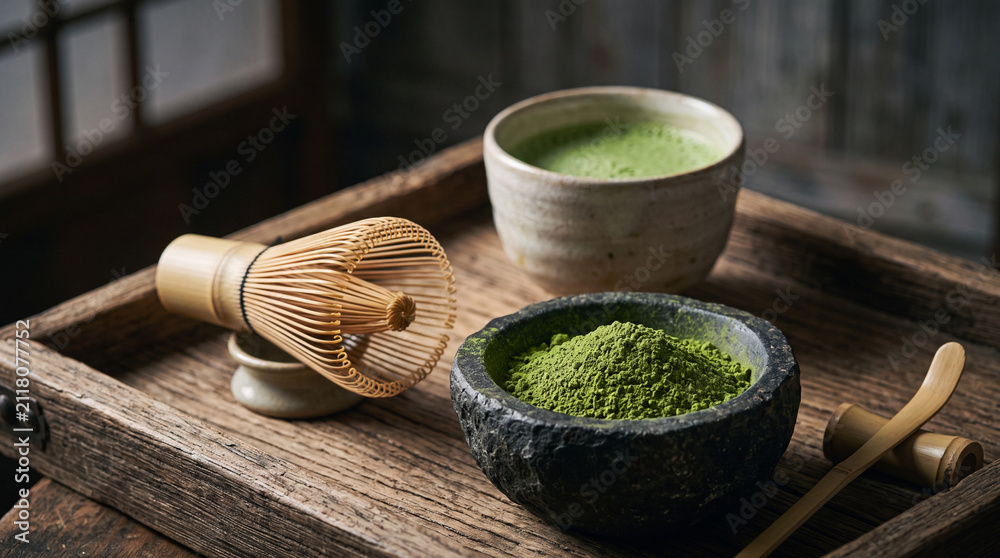

01 / 03
01 / 03
Matcha Moment
Digitálny domov pre malú značku s veľkou láskou k japonskému čaju.
Dizajn · web · nápady
Tvorím premyslené digitálne zážitky, ktoré spájajú čistý dizajn s ľudským prístupom.
Otvorená/ý novým spoluprácam
Vybrané práce 2024 — 2026
Každý projekt začína otázkou. Tu sú tri odpovede, ktoré dostali svoju vlastnú podobu.
Trochu osobnejšie
Som tvorivý človek, ktorého baví meniť dobré nápady na zrozumiteľné a príjemné digitálne zážitky. Všímam si malé detaily, no vždy myslím na celok a na ľudí, ktorí budú výsledok používať.
Najradšej hľadám rovnováhu medzi funkčnosťou a krásou. Od prvého náčrtu po posledný riadok kódu.
